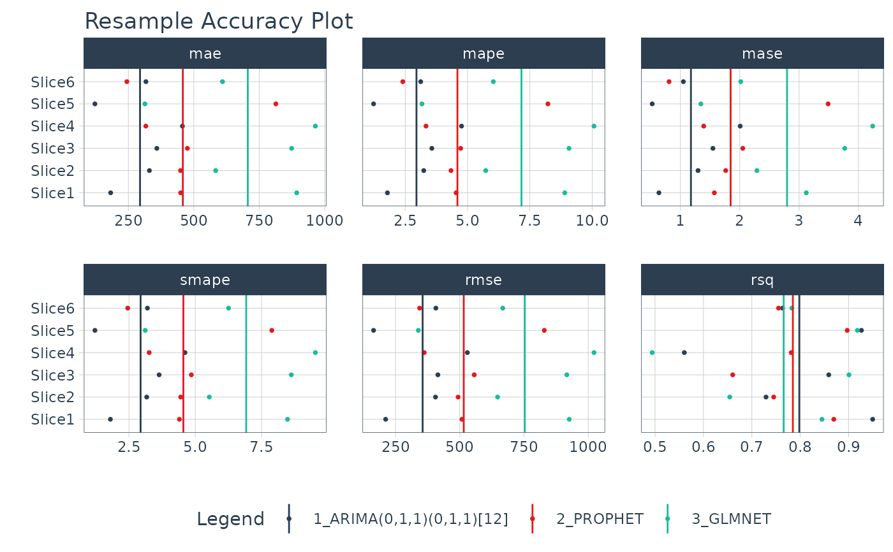

Interactive Resampling Accuracy Plots
Source:R/plot_modeltime_resamples.R
plot_modeltime_resamples.RdA convenient plotting function for visualizing resampling accuracy by resample set for each model in a Modeltime Table.
Usage
plot_modeltime_resamples(
.data,
.metric_set = default_forecast_accuracy_metric_set(),
.summary_fn = mean,
...,
.facet_ncol = NULL,
.facet_scales = "free_x",
.point_show = TRUE,
.point_size = 1,
.point_shape = 16,
.point_alpha = 1,
.summary_line_show = TRUE,
.summary_line_size = 0.5,
.summary_line_type = 1,
.summary_line_alpha = 1,
.x_intercept = NULL,
.x_intercept_color = "red",
.x_intercept_size = 0.5,
.legend_show = TRUE,
.legend_max_width = 40,
.title = "Resample Accuracy Plot",
.x_lab = "",
.y_lab = "",
.color_lab = "Legend",
.interactive = TRUE
)Arguments
- .data
A modeltime table that includes a column
.resample_resultscontaining the resample results. Seemodeltime_fit_resamples()for more information.- .metric_set
A
yardstick::metric_set()that is used to summarize one or more forecast accuracy (regression) metrics.- .summary_fn
A single summary function that is applied to aggregate the metrics across resample sets. Default:
mean.- ...
Additional arguments passed to the
.summary_fn.- .facet_ncol
Default:
NULL. The number of facet columns.- .facet_scales
Default:
free_x.- .point_show
Whether or not to show the individual points for each combination of models and metrics. Default:
TRUE.- .point_size
Controls the point size. Default: 1.
- .point_shape
Controls the point shape. Default: 16.
- .point_alpha
Controls the opacity of the points. Default: 1 (full opacity).
- .summary_line_show
Whether or not to show the summary lines. Default:
TRUE.- .summary_line_size
Controls the summary line size. Default: 0.5.
- .summary_line_type
Controls the summary line type. Default: 1.
- .summary_line_alpha
Controls the summary line opacity. Default: 1 (full opacity).
- .x_intercept
Numeric. Adds an x-intercept at a location (e.g. 0). Default: NULL.
- .x_intercept_color
Controls the x-intercept color. Default: "red".
- .x_intercept_size
Controls the x-intercept size. Default: 0.5.
- .legend_show
Logical. Whether or not to show the legend. Can save space with long model descriptions.
- .legend_max_width
Numeric. The width of truncation to apply to the legend text.
- .title
Title for the plot
- .x_lab
X-axis label for the plot
- .y_lab
Y-axis label for the plot
- .color_lab
Legend label if a
color_varis used.- .interactive
Returns either a static (
ggplot2) visualization or an interactive (plotly) visualization
Details
Default Accuracy Metrics
The following accuracy metrics are included by default via modeltime::default_forecast_accuracy_metric_set():
MAE - Mean absolute error,
yardstick::mae()MAPE - Mean absolute percentage error,
yardstick::mape()MASE - Mean absolute scaled error,
yardstick::mase()SMAPE - Symmetric mean absolute percentage error,
yardstick::smape()RMSE - Root mean squared error,
yardstick::rmse()RSQ - R-squared,
yardstick::rsq()
Summary Function
Users can supply a single summary function (e.g. mean) to summarize the
resample metrics by each model.
Examples
m750_training_resamples_fitted %>%
plot_modeltime_resamples(
.interactive = FALSE
)
